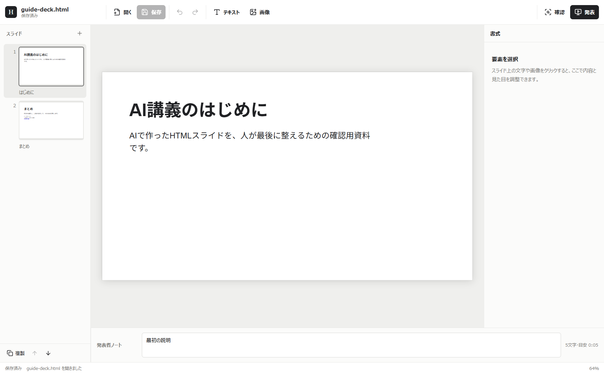
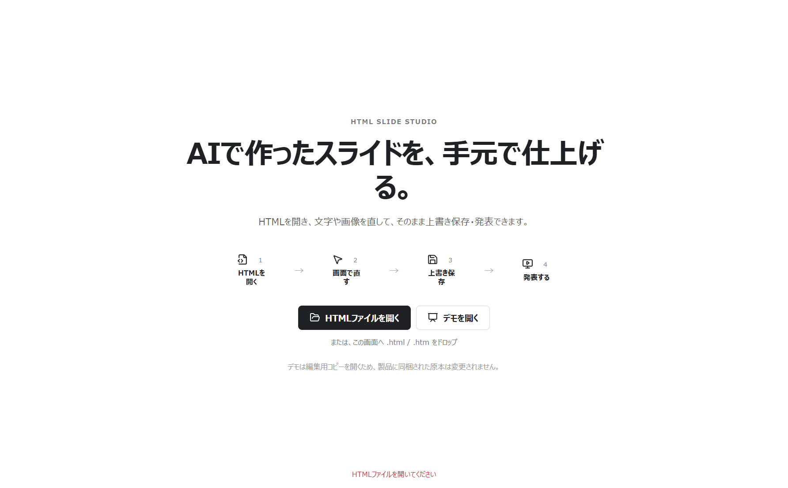
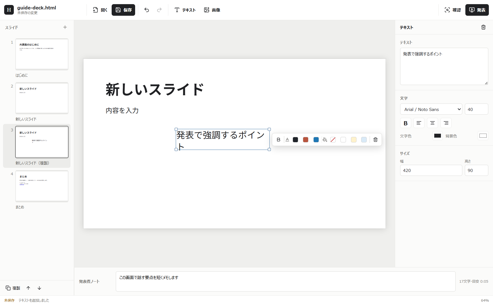
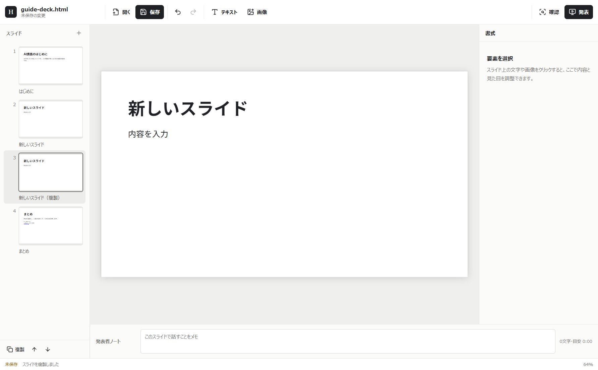
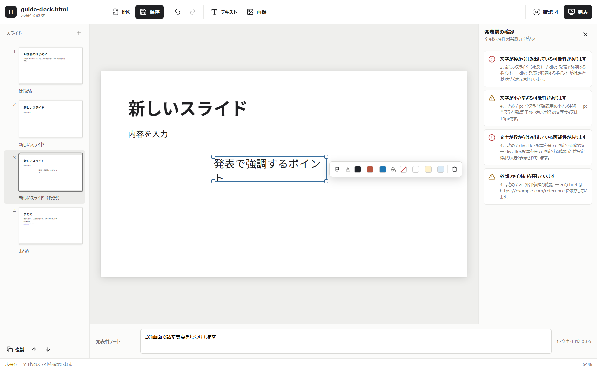
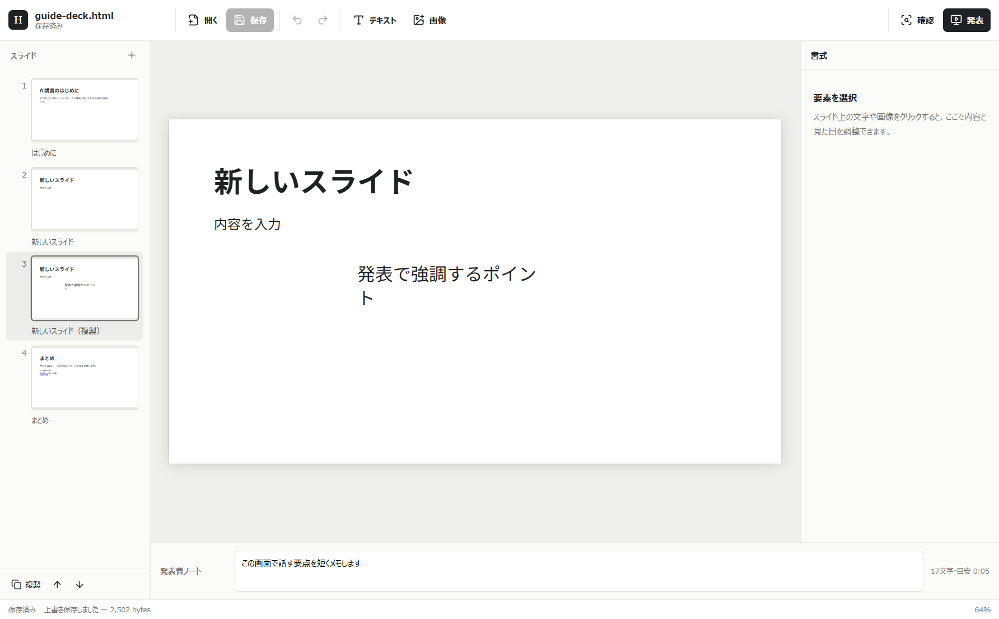
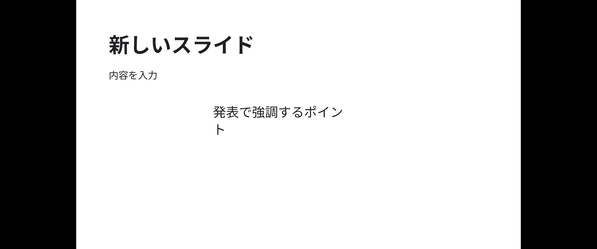
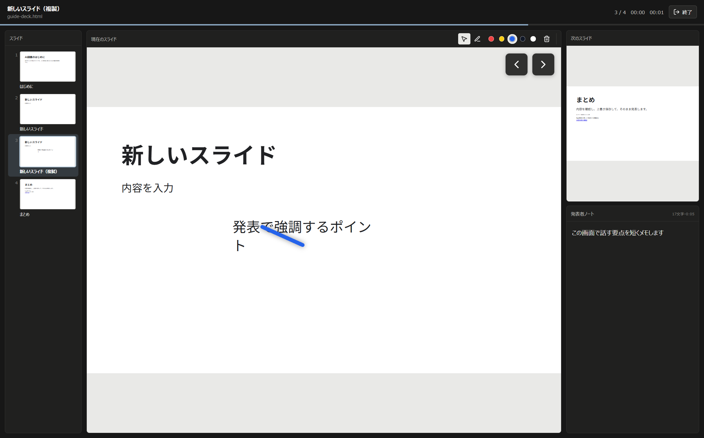

HTML Slide Studio
操作ガイド
AIで作ったHTMLスライドを開き、手元で直し、同じファイルへ保存して発表するまで。
このツールでできること

HTML Slide Studioは、AIなどで作った静的HTMLスライドを最後に人が整えて発表するためのWindowsアプリです。独自の作業形式を覚える必要はありません。
- 文字、色、書体、位置、大きさを直す
- 文字と画像を追加・差し替える
- スライドを追加・複製・並べ替える
- 発表者ノートと発表前チェックを使う
- 開いたHTMLへ上書き保存し、そのまま発表する
保存は上書きです。 元版も残したい場合は、アプリで開く前にHTMLと関連画像フォルダを自分でコピーしてください。
HTMLを開く

.html または .htm をドロップします。最初に試す場合は デモを開く を選びます。- 通常版のインストーラーを一度実行し、デスクトップまたはスタートメニューのショートカットから起動します。
- 元版を残したい場合は、先にHTML一式をエクスプローラーでコピーします。
- 自分の資料を開く場合は HTMLファイルを開く を押します。
- Windowsのファイル選択画面で、編集したい
.htmlまたは.htmを選びます。 - 操作を試すだけなら デモを開く を押します。製品内の原本ではなく、編集用コピーが開きます。
- 編集画面にスライド一覧とキャンバスが出たら準備完了です。
HTMLファイルをショートカットまたは実行ファイルへドロップする方法や、HTMLを起動引数として渡す方法でも開けます。portable EXEは予備用で、通常版より起動に時間がかかります。
開始画面は実画面で確認済みです。Windows標準のファイル選択画面は今回の自動撮影には含めていません。
編集画面の見方
| 場所 | 役割 |
|---|---|
| 上 | 開く、保存、Undo、Redo、文字・画像の追加、確認、発表 |
| 左 | スライドの選択、追加、複製、上下移動 |
| 中央 | 実際のスライド。文字や画像をクリックして選択 |
| 右 | 選んだ要素の文字、色、書体、幅、高さ、画像表示方法 |
| 下 | そのスライドで話す内容を残す発表者ノート |
キャンバス上の要素を選ぶと青い枠が付きます。ドラッグで移動し、四隅のハンドルで大きさを変えます。矢印キーでも少しずつ動かせます。
操作を戻すときは上の左向き矢印、やり直すときは右向き矢印を押します。Ctrl+Z、Ctrl+Y、Ctrl+Shift+Zも使えます。
文字と画像を直す

文字を直す
- 既存の文字を直す場合は、キャンバス上の文字をクリックします。新しく置く場合は上の テキスト を押します。
- 右側の テキスト 欄に内容を入力します。
- 書体、文字サイズ、太字、揃え方、文字色、背景色を調整します。
- 幅と高さを数値で調整するか、キャンバス上の枠をドラッグします。
画像を追加・差し替える
- 新しい画像は上の 画像 を押します。
- Windowsの選択画面でPNG、JPEG、GIF、WebP、SVGのいずれかを選びます。
- 追加された画像を移動・拡大縮小します。
- 既存画像を変える場合は画像を選び、右側の 画像を差し替える を押します。
- 必要なら 全体を表示、枠に合わせて切り抜く、枠いっぱいに伸ばす を選びます。
追加画像はHTMLへ埋め込まれず、HTMLと同じ場所の <HTML名>.assets/ にコピーされます。HTML本体が画像データで大きくなり続けることを防ぐためです。
文字編集画面は実画面で確認済みです。画像の保存先・再利用・未参照画像回収は自動テスト済みですが、Windows標準の画像選択画面は今回の自動撮影には含めていません。
スライドを追加・複製・並べ替える

- 追加位置の前にあるスライドを左の一覧で選びます。
- 新しい白紙スライドは、一覧見出し右の ＋ を押します。
- 選択中のスライドを元に作る場合は、左下の 複製 を押します。
- 順番を変える場合は、左下の上矢印または下矢印を押します。
- 保存後にHTMLを開き直し、枚数と順番を確認します。
複製ではスライド内のHTML IDも作り直されます。Reveal形式の入れ子 section は内容として保持し、外側のスライドだけを一覧・並べ替え対象にします。
section.slide、article.slide、[data-slide]、Revealのようにスライド構造を明示していないHTMLでは、汎用sectionを誤って動かさないため、追加・複製・並べ替えが理由付きで無効になります。内容の確認と編集は続けられます。
発表前に確認する

- 上の 確認 を押します。
- 全スライドの文字の切れ、スライド外へのはみ出し、小さすぎる文字、壊れた画像、外部参照を確認します。
- 対象が示される項目にはスライド番号と見出しが表示されます。項目を押すと該当スライドへ移動して対象が選択されるので、位置・大きさ・内容を直します。資料全体に関わる外部参照など、移動先を1つに決められない項目は押せません。
- 右上の × で閉じ、必要ならもう一度 確認 を押します。
確認は発表事故を減らすための補助です。指摘が0件でも、最後は実際の画面で文字量、画像、配色、スライド順を見てください。 正常な折返しや、枠の外にも表示できる設定の文字は、それだけでは「文字の切れ」に含めません。実際に文字が隠れる、またはscrollしないと読めない場合を指摘します。
同じHTMLへ保存する

- 元版を残す必要がある場合は、保存前にエクスプローラーでHTML一式をコピーします。
- 上の 保存 を押します。
- 左上の状態が 保存済み、下部のメッセージが 上書き保存しました になったことを確認します。
- 必要ならHTMLをブラウザで開き、画像とレイアウトを確認します。
保存は開いたHTMLと同じ場所への上書きです。保存中は一時ファイルを検証し、Windowsの置換処理で元内容を一時退避してから反映します。別のアプリが同じHTMLを書き換えた場合は、変更を上書きせず再度開くよう知らせます。保存中に別のHTMLをダブルクリックした場合は、現在の保存が終わってからそのHTMLを開きます。
保存ボタンと完了表示は実画面で確認済みです。独自アクセス権を設定したNTFSファイルでの権限完全保持は、所有者による実機受け入れ項目です。
発表する

- 発表前にノート、スライド順、確認 の指摘を見直します。
- 上の 発表 を押します。
- 2画面以上では、主画面に出る発表者ウィンドウからすべて操作します。外部画面には操作列を出しません。
- 1画面ではpointerを動かすと操作列が一時表示され、操作を止めると自動で隠れます。
→、PageDown、Spaceで次へ、←、PageUpで前へ進めます。 - 画面を指すときは初期状態の レーザー を使います。clickで点、dragで線を描き、約2秒で消えます。
- 残して説明するときは ペン に切り替えます。赤、黄、青、黒、白から色を選べ、閉じた線も塗りつぶされません。線は 描画を消去 を押すまで残ります。
- 終了するときは
Escまたは 編集へ戻る を押します。
2画面以上では、外部画面に聴衆向けスライド、主画面に発表者ウィンドウを出します。発表者ウィンドウは、左がスライド一覧、中央が現在のスライド、右が次のスライドと発表者ノートです。3画面以上では、主画面以外のうち最も広い画面を投影先に選びます。

- 左のスライド一覧または中央上部の前後ボタンで、見せたいスライドへ移動します。
- 中央の 現在のスライド と、右上の 次のスライド を見ながら進行します。
- 右下の 発表者ノート は発表中も直接修正できます。入力してもスライド映像は再読込されません。入力欄を選択中は、Spaceや矢印キーを文字入力に使えます。
- 中央上部で レーザー／ペン、赤／黄／青／黒／白、描画を消去 を操作します。レーザーは約2秒で消え、ペンは消去まで残ります。初期状態は赤いレーザーです。
- 終了するときは右上の 終了 を押します。
発表者ノートの修正は編集画面へ戻った時点で未保存になります。発表終了後に上部の 保存 を押すと、同じHTMLへ上書き保存されます。レーザーとペンの描画は発表中だけの一時表示で、HTMLには保存されません。
掲載画像は、個人情報を含まない合成スライドを実アプリで開いて取得しています。発表者UI、画面選択、終了時の復元は自動テスト済みです。物理2画面への同時配置と、実際の会場機材を使う最終確認は利用者側で行ってください。
困ったとき
- 起動しない: 通常版はインストール後のデスクトップまたはスタートメニューのショートカットから起動します。ZIP版は中から直接起動せず、先にすべて展開してください。未署名のためWindowsの警告が出る場合があります。
- HTMLを開けない:
.htmlまたは.htmか確認します。JavaScript実行に表示を依存する資料は対象外です。 - 文字を選べない: 左で対象スライドを選び直し、中央の文字を1回クリックします。追加文字は選択枠の内側をクリックします。
- 編集を戻したい: 保存前なら上の左向き矢印または
Ctrl+Zを使います。保存後に元版へ戻す用途の履歴機能はありません。 - 保存できない: 他のアプリで同じHTMLを変更していないか確認します。変更済みなら本アプリでHTMLを開き直してください。
- 保存時にRecovery backupの場所が出た: 表示されたファイルを削除せず、同じフォルダを別の場所へコピーしてから確認してください。外部更新を守るため、アプリが自動上書きを止めた状態です。
- 画像が出ない: HTMLと画像フォルダの相対位置を変えていないか確認します。追加画像は
<HTML名>.assets/にあります。 - 追加・複製・並べ替えが押せない: HTMLがスライド構造を明示していません。各スライドへ
class="slide"またはdata-slideを付けるか、Reveal構造にしてから開き直します。 - 発表を終了したい:
Escまたは画面下の 編集へ戻る を押します。
解決しない場合は、問題が起きたHTMLのコピー、操作手順、画面下に出たメッセージを揃えて確認します。個人情報や秘密情報を含むHTMLはそのまま共有しないでください。